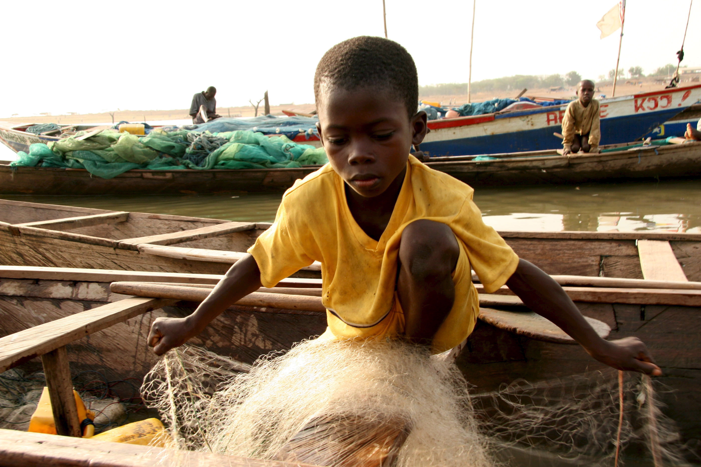
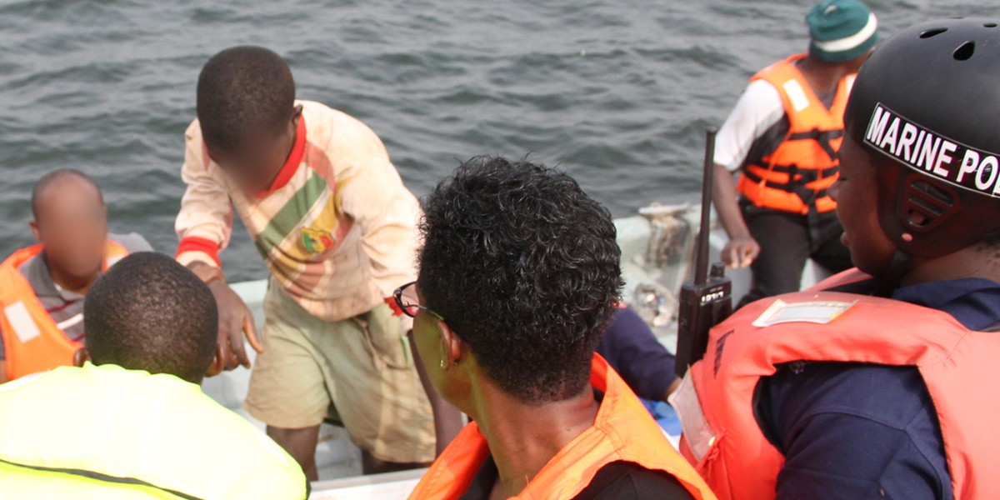

ABOUT VOLTA PROJECT
What drives the Volta Project is the fact that slavery remains a modern day problem, with an estimate 46 Million today working under violent and harsh conditions for little to no pay. Children represent 26% of the slaves today.
Data from the Ghana Statistical Service indicate that 1.9 million children aged 5-17 are engaged in child labour with 1.2 million of the children engaged in hazardous labour. On Lake Volta in Ghana, child slavery is rampant in the fishing industry.
Volta Project's purpose is to provide an easy to use interface for eyewitnesses of child slavery around Lake Volta to quickly, easily, and anonymously report nefarious activity. These reports will generate a map of suspicious activity for NGOs and government officials to use in investigating cases of child slavery.
THE TEAM
The Volta Project team comprises Jose Garza and Tim Chiang, both first year MIT graduate students in the System Design and Management program.

Jose Garza
MIT SDM Student

Tim Chiang
MIT SDM Student
Our hope is that this application can be used to aid in the rescue of enslaved children on the lake. Like most big challenges, the problem of child slavery is multi-faceted. No single solution can fix the problem overnight, but a tool that provides a voice - a call for help to those most in need, just might help.
HOW TO REPORT
We aim to gather reports of child slavery activity around the Lake Volta region.
REPORT! Child slavery is all around the Lake Volta area. If you think you are observing the use of child slavery on fishing boats or along the shoreline of the lake, take action! Simply open the application on your phone and allow the application to have access to your phone's location. Provide a description of what you see, and press the "Report" button. That's it! You're report is anonymized so do not fear reprocussions of submitting a report.